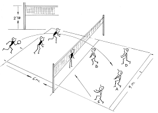

Objetivos y características básicas
El objetivo del juego del Botebol es pasar la pelota por encima de la red y que de más de un bote seguido después de caer sobre el terreno de juego contrario.
El BÓTEBOL es un juego colectivo que necesita una gran compenetración y "cooperación" entre los participantes para su desarrollo.
TERRENO DE JUEGO
El terreno de juego en el Botebol-6 está formado por dos cuadrados de 9 metros de lado, por tanto el terreno de juego medirá 18 X 9 m.
La red se situará a la altura de 2´30 metros en la intersección de los dos cuadrados.
MATERIAL
Se juega con un balón similar al de Voleibol, que tenga un buen bote y agradable golpeo.
NÚMERO DE PARTICIPANTES
Cada equipo está formado por tres chicas y tres chicos en el terreno de juego, que se colocarán alternando chica-chico.
DESARROLLO DEL JUEGO
Se tienen que dar tres toques por equipo antes de pasar el balón al campo contrario, pero no dos veces seguidas el mismo jugador o jugadora. Y los tres golpes no pueden efectuarse por participantes del mismo sexo.
Antes del primer toque la pelota TIENE QUE DAR UN BOTE, antes del segundo y tercer toque la pelota PUEDE dar un bote.
REGLAS
- El saque se realizará golpeando la pelota con cualquier parte del cuerpo y lo efectúa el jugador o jugadora situado como zaguero derecho. Para sacar podrá acercarse lo que quiera a la red pero detrás de la línea de ataque, teniendo como mínimo un pie en contacto con el suelo en el momento de efectuar el saque. Se dispone de un sólo intento. Si el saque se realiza desde el fondo de la pista se puede realizar igual que el voleibol, es decir saltando.
- Para conseguir puntuar tenemos que haber sacado. En caso contrario recuperaremos el saque, produciéndose en ese momento una rotación del equipo que recupera en la dirección de las agujas del reloj.
- Si la pelota bota sobre las líneas del terreno de juego, se considera que ha botado dentro del campo.
- Cada set tiene 15 puntos. Al llegar a 8 se cambia de campo, ocupando las mismas posiciones en el terreno de juego. Si hay empate a 14 puntos, ganará el que obtenga 2 puntos de ventaja. Gana el equipo al mejor de tres sets.
VARIANTES
Otra modalidad será jugar al Bótebol-4, con cuatro participantes y el campo más pequeño. También se puede utilizar dos tiempos de 10 a 20 minutos cada uno, descansando 5 entre tiempo y tiempo. O jugar al mejor de tres sets de 8 puntos, sin necesidad de tener dos puntos de ventaja.